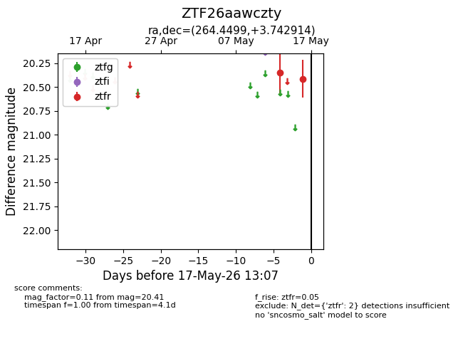
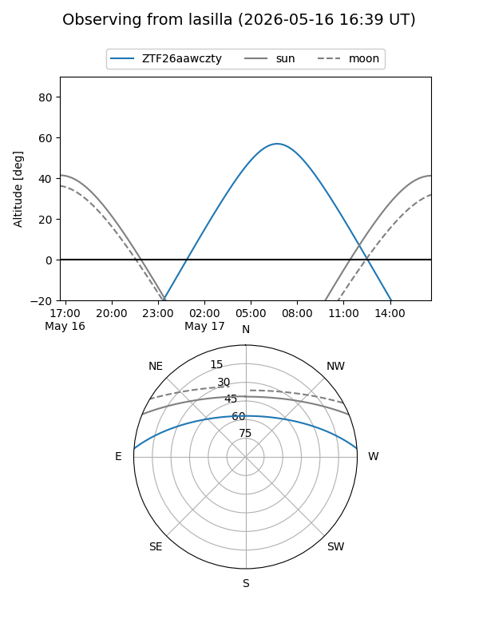
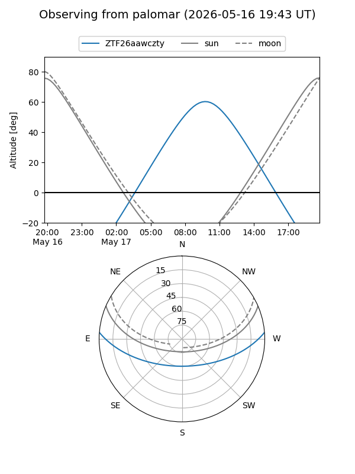

ZTF26aawczty
Target ZTF26aawczty at 2026-05-17 13:09
Aliases and brokers:
FINK: link
Lasair: link
ALeRCE: link
alt names
ZTF26aawczty (ztf,fink_ztf)
Coordinates:
equatorial (ra, dec) = 264.4499,+3.74291
equatorial (HMS+DMS) = 17:37:47.99,+03:44:34.49
galactic (l, b) = (27.7660,+18.07318)
Flags:
Photometry:
last ztfr=20.41
2 ztfr detections
Lightcurve

Visibility


Additional plots